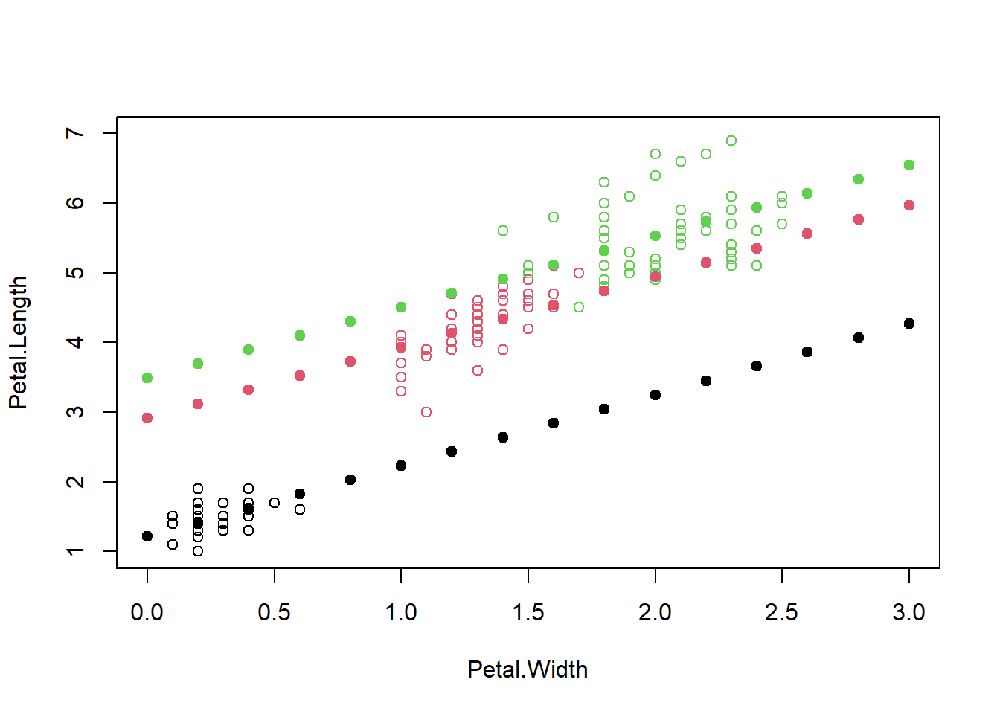
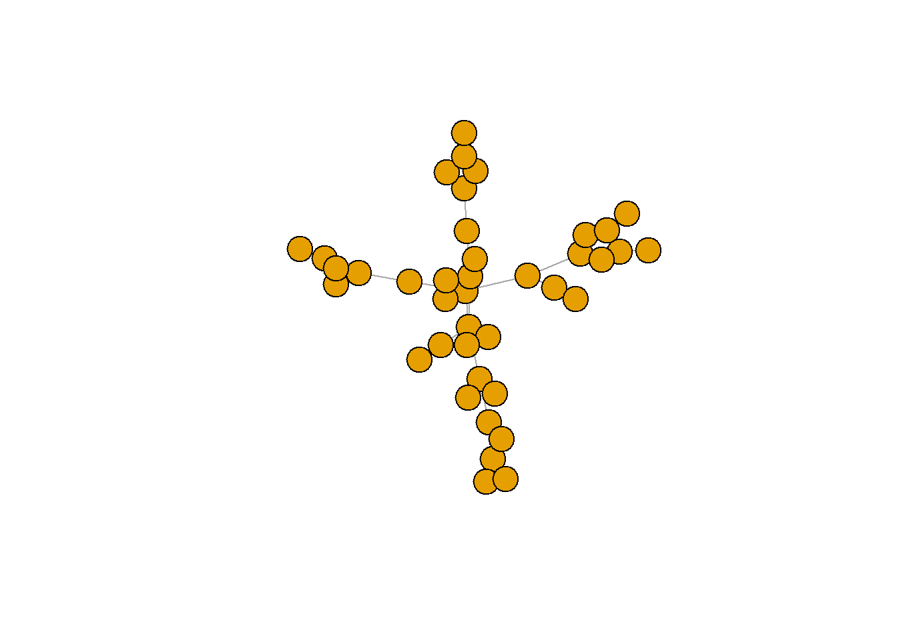

Module 1: R Studio Basics
R is both a language and computing environment. R is open source and free for anyone to download and use.
Panels
There are four visible panels at a time, each with different purposes (1) The R console accepts commands and produces output to your commands. (2) A text editor window to create and record code. (3) An environment window that shows your stored data in R (4) A plot/help/files window that can alternate to show your plots, help reauests, and file directory
For example, use the text editing window to write the following code:
plot(2,2) In R Studio, notice that the code is stored in the text editor (script), is passed to the console, and then is plotted in the plot window
Also, panels can be resized by dragging the slider
In R Studio, notice that the code is stored in the text editor (script), is passed to the console, and then is plotted in the plot window
Also, panels can be resized by dragging the slider
Getting Help
Stuck on a line of code? Not sure what a function does exactly?
Want an example of someone else using that function?
Use the ? before any function to pull up its help page in the Help window.
?plot## starting httpd help server ... doneExecuting Commands
Send your code from the text editor/script to the console in one of three ways: (1) Code > Run Selected Line(s) (2) Select Run Icon on top-right of Script Editor box (3) Keyboard Shortcut Mac: Command + Return Windows: Ctrl + Enter
Module 2: More R basics
Scripts
You can have multiple scripts in R Scripts appear as tabs in the text edit panel Save your scripts OFTEN R studio will sometimes crash unexpectedly and you could lose unsaved changes
Annotating
Have you wondered why some of the text in your script is green colored? It’s to annotate your script! Annotations are saved in the text editor window You can use them to section your script and to write notes about what your code is doing. You SHOULD annotate your script, so you can go back potentially YEARS later and still understand what you did (why did I write that code?)
Anything after the HASHTAG becomes annotated, for example:
2+2 #An easy math problem ## [1] 42 #Math + 2## [1] 2Notice in the second math line above, the “+2” is not added because it occurs after the #
Types of Objects
R data is stored as Objects
Common types of R Objects: Vectors: Single Dimension (a variable or column) Matrices: a data matrix Data Frames: Basically tables Data frames are COMMON and are organized like an excel worksheet. -Variables are columns -Observations are rows
mtcars## mpg cyl disp hp drat wt qsec vs am gear carb
## Mazda RX4 21.0 6 160.0 110 3.90 2.620 16.46 0 1 4 4
## Mazda RX4 Wag 21.0 6 160.0 110 3.90 2.875 17.02 0 1 4 4
## Datsun 710 22.8 4 108.0 93 3.85 2.320 18.61 1 1 4 1
## Hornet 4 Drive 21.4 6 258.0 110 3.08 3.215 19.44 1 0 3 1
## Hornet Sportabout 18.7 8 360.0 175 3.15 3.440 17.02 0 0 3 2
## Valiant 18.1 6 225.0 105 2.76 3.460 20.22 1 0 3 1
## Duster 360 14.3 8 360.0 245 3.21 3.570 15.84 0 0 3 4
## Merc 240D 24.4 4 146.7 62 3.69 3.190 20.00 1 0 4 2
## Merc 230 22.8 4 140.8 95 3.92 3.150 22.90 1 0 4 2
## Merc 280 19.2 6 167.6 123 3.92 3.440 18.30 1 0 4 4
## Merc 280C 17.8 6 167.6 123 3.92 3.440 18.90 1 0 4 4
## Merc 450SE 16.4 8 275.8 180 3.07 4.070 17.40 0 0 3 3
## Merc 450SL 17.3 8 275.8 180 3.07 3.730 17.60 0 0 3 3
## Merc 450SLC 15.2 8 275.8 180 3.07 3.780 18.00 0 0 3 3
## Cadillac Fleetwood 10.4 8 472.0 205 2.93 5.250 17.98 0 0 3 4
## Lincoln Continental 10.4 8 460.0 215 3.00 5.424 17.82 0 0 3 4
## Chrysler Imperial 14.7 8 440.0 230 3.23 5.345 17.42 0 0 3 4
## Fiat 128 32.4 4 78.7 66 4.08 2.200 19.47 1 1 4 1
## Honda Civic 30.4 4 75.7 52 4.93 1.615 18.52 1 1 4 2
## Toyota Corolla 33.9 4 71.1 65 4.22 1.835 19.90 1 1 4 1
## Toyota Corona 21.5 4 120.1 97 3.70 2.465 20.01 1 0 3 1
## Dodge Challenger 15.5 8 318.0 150 2.76 3.520 16.87 0 0 3 2
## AMC Javelin 15.2 8 304.0 150 3.15 3.435 17.30 0 0 3 2
## Camaro Z28 13.3 8 350.0 245 3.73 3.840 15.41 0 0 3 4
## Pontiac Firebird 19.2 8 400.0 175 3.08 3.845 17.05 0 0 3 2
## Fiat X1-9 27.3 4 79.0 66 4.08 1.935 18.90 1 1 4 1
## Porsche 914-2 26.0 4 120.3 91 4.43 2.140 16.70 0 1 5 2
## Lotus Europa 30.4 4 95.1 113 3.77 1.513 16.90 1 1 5 2
## Ford Pantera L 15.8 8 351.0 264 4.22 3.170 14.50 0 1 5 4
## Ferrari Dino 19.7 6 145.0 175 3.62 2.770 15.50 0 1 5 6
## Maserati Bora 15.0 8 301.0 335 3.54 3.570 14.60 0 1 5 8
## Volvo 142E 21.4 4 121.0 109 4.11 2.780 18.60 1 1 4 2?mtcars #mtcars is a pre-loaded dataset always available to anyone in R.
class(mtcars) #Class function is useful to show the class of the object (what type of object?)## [1] "data.frame"Other (LESS COMMON) object types: Multiple Dimension - Can think of as tabs in excel file -Lists Other 2 or 3-D object classes include -Arrays -Tables
Creating your own objects
Assign a name to your object using <-, -> or =
Most people just use <-
a <- 1 + 2 + 3
a## [1] 65 + 5 -> b
b## [1] 10c = log(5)
c## [1] 1.609438You can set an R object to equal another object, or as a function of another object
x = a
x## [1] 6y = b * 10
y## [1] 100The function c() stands for concatenate and is used to create a vector
Notice you can name your object almost anything
vec <- c(1,2,3,4,5,6)
vec## [1] 1 2 3 4 5 6Naming objects IS case sensitive
Useful arithmetic functions in Base R, which we can use for vec
mean(vec)## [1] 3.5Also, consider using: min(); max(); summary()
Working with a Data Set
Let’s return to mtcars dataset
The object of the dataset is called mtcars
mtcars## mpg cyl disp hp drat wt qsec vs am gear carb
## Mazda RX4 21.0 6 160.0 110 3.90 2.620 16.46 0 1 4 4
## Mazda RX4 Wag 21.0 6 160.0 110 3.90 2.875 17.02 0 1 4 4
## Datsun 710 22.8 4 108.0 93 3.85 2.320 18.61 1 1 4 1
## Hornet 4 Drive 21.4 6 258.0 110 3.08 3.215 19.44 1 0 3 1
## Hornet Sportabout 18.7 8 360.0 175 3.15 3.440 17.02 0 0 3 2
## Valiant 18.1 6 225.0 105 2.76 3.460 20.22 1 0 3 1
## Duster 360 14.3 8 360.0 245 3.21 3.570 15.84 0 0 3 4
## Merc 240D 24.4 4 146.7 62 3.69 3.190 20.00 1 0 4 2
## Merc 230 22.8 4 140.8 95 3.92 3.150 22.90 1 0 4 2
## Merc 280 19.2 6 167.6 123 3.92 3.440 18.30 1 0 4 4
## Merc 280C 17.8 6 167.6 123 3.92 3.440 18.90 1 0 4 4
## Merc 450SE 16.4 8 275.8 180 3.07 4.070 17.40 0 0 3 3
## Merc 450SL 17.3 8 275.8 180 3.07 3.730 17.60 0 0 3 3
## Merc 450SLC 15.2 8 275.8 180 3.07 3.780 18.00 0 0 3 3
## Cadillac Fleetwood 10.4 8 472.0 205 2.93 5.250 17.98 0 0 3 4
## Lincoln Continental 10.4 8 460.0 215 3.00 5.424 17.82 0 0 3 4
## Chrysler Imperial 14.7 8 440.0 230 3.23 5.345 17.42 0 0 3 4
## Fiat 128 32.4 4 78.7 66 4.08 2.200 19.47 1 1 4 1
## Honda Civic 30.4 4 75.7 52 4.93 1.615 18.52 1 1 4 2
## Toyota Corolla 33.9 4 71.1 65 4.22 1.835 19.90 1 1 4 1
## Toyota Corona 21.5 4 120.1 97 3.70 2.465 20.01 1 0 3 1
## Dodge Challenger 15.5 8 318.0 150 2.76 3.520 16.87 0 0 3 2
## AMC Javelin 15.2 8 304.0 150 3.15 3.435 17.30 0 0 3 2
## Camaro Z28 13.3 8 350.0 245 3.73 3.840 15.41 0 0 3 4
## Pontiac Firebird 19.2 8 400.0 175 3.08 3.845 17.05 0 0 3 2
## Fiat X1-9 27.3 4 79.0 66 4.08 1.935 18.90 1 1 4 1
## Porsche 914-2 26.0 4 120.3 91 4.43 2.140 16.70 0 1 5 2
## Lotus Europa 30.4 4 95.1 113 3.77 1.513 16.90 1 1 5 2
## Ford Pantera L 15.8 8 351.0 264 4.22 3.170 14.50 0 1 5 4
## Ferrari Dino 19.7 6 145.0 175 3.62 2.770 15.50 0 1 5 6
## Maserati Bora 15.0 8 301.0 335 3.54 3.570 14.60 0 1 5 8
## Volvo 142E 21.4 4 121.0 109 4.11 2.780 18.60 1 1 4 2class(mtcars) # Class of dataset -- data frame## [1] "data.frame"str(mtcars) # Structure of the data - useful to examine the data set## 'data.frame': 32 obs. of 11 variables:
## $ mpg : num 21 21 22.8 21.4 18.7 18.1 14.3 24.4 22.8 19.2 ...
## $ cyl : num 6 6 4 6 8 6 8 4 4 6 ...
## $ disp: num 160 160 108 258 360 ...
## $ hp : num 110 110 93 110 175 105 245 62 95 123 ...
## $ drat: num 3.9 3.9 3.85 3.08 3.15 2.76 3.21 3.69 3.92 3.92 ...
## $ wt : num 2.62 2.88 2.32 3.21 3.44 ...
## $ qsec: num 16.5 17 18.6 19.4 17 ...
## $ vs : num 0 0 1 1 0 1 0 1 1 1 ...
## $ am : num 1 1 1 0 0 0 0 0 0 0 ...
## $ gear: num 4 4 4 3 3 3 3 4 4 4 ...
## $ carb: num 4 4 1 1 2 1 4 2 2 4 ...head(mtcars) ## Return first 6 lines of data frame## mpg cyl disp hp drat wt qsec vs am gear carb
## Mazda RX4 21.0 6 160 110 3.90 2.620 16.46 0 1 4 4
## Mazda RX4 Wag 21.0 6 160 110 3.90 2.875 17.02 0 1 4 4
## Datsun 710 22.8 4 108 93 3.85 2.320 18.61 1 1 4 1
## Hornet 4 Drive 21.4 6 258 110 3.08 3.215 19.44 1 0 3 1
## Hornet Sportabout 18.7 8 360 175 3.15 3.440 17.02 0 0 3 2
## Valiant 18.1 6 225 105 2.76 3.460 20.22 1 0 3 1tail(mtcars) ## Return last 6 lines of data frame## mpg cyl disp hp drat wt qsec vs am gear carb
## Porsche 914-2 26.0 4 120.3 91 4.43 2.140 16.7 0 1 5 2
## Lotus Europa 30.4 4 95.1 113 3.77 1.513 16.9 1 1 5 2
## Ford Pantera L 15.8 8 351.0 264 4.22 3.170 14.5 0 1 5 4
## Ferrari Dino 19.7 6 145.0 175 3.62 2.770 15.5 0 1 5 6
## Maserati Bora 15.0 8 301.0 335 3.54 3.570 14.6 0 1 5 8
## Volvo 142E 21.4 4 121.0 109 4.11 2.780 18.6 1 1 4 2length(mtcars) #Essentially produces the number of columns## [1] 11length(mtcars$mpg) #Essentially produces the number of rows## [1] 32dim(mtcars) #The order used in R is always: Rows, Columns (Left to right!)## [1] 32 11names(mtcars) ## Return names of all variables## [1] "mpg" "cyl" "disp" "hp" "drat" "wt" "qsec" "vs" "am" "gear"
## [11] "carb"In the above code, we ran multiple lines of code to help us understand the structure of the dataset, each with a unique function.
Vectors
We’ve already discussed using the concatenate function c() to make a vector
new_vec <- c(1,3,5,7)
length(new_vec)## [1] 4Now let’s make a vector of actual data, which we can pull from the mtcars dataset
miles_per_gallon <- mtcars$mpg #The '$' refers to variables (columns) within the dataset
miles_per_gallon## [1] 21.0 21.0 22.8 21.4 18.7 18.1 14.3 24.4 22.8 19.2 17.8 16.4 17.3 15.2 10.4
## [16] 10.4 14.7 32.4 30.4 33.9 21.5 15.5 15.2 13.3 19.2 27.3 26.0 30.4 15.8 19.7
## [31] 15.0 21.4Basic Indexing
Ever wonder what the square brackets do in R? []
Wonder no more.
The square brackets are used to index, which means to pull out subsections from objects.
practice_vec <- c(0,10,20,30,40,50,60,70)
practice_vec## [1] 0 10 20 30 40 50 60 70indexed_vec <- practice_vec[1:4] #Observations 1 thru 4
indexed_vec## [1] 0 10 20 30indexed_vec <- practice_vec[5] #Only the 5th observation
indexed_vec## [1] 40indexed_vec <- practice_vec[-5] #Everything but the 5th observation
indexed_vec## [1] 0 10 20 30 50 60 70Notice that the object indexed_vec becomes updated every time we run a new line.
Indexing a vector is straightforward, we will return to indexing for 2-D data frames.
Data Frames
mpg is another base R dataset.
#install.packages("ggplot2")
library(ggplot2) #We will return to installing and loading packages later in this document.
mpg #It's not quite a data frame yet## # A tibble: 234 x 11
## manufacturer model displ year cyl trans drv cty hwy fl class
## <chr> <chr> <dbl> <int> <int> <chr> <chr> <int> <int> <chr> <chr>
## 1 audi a4 1.8 1999 4 auto(l~ f 18 29 p comp~
## 2 audi a4 1.8 1999 4 manual~ f 21 29 p comp~
## 3 audi a4 2 2008 4 manual~ f 20 31 p comp~
## 4 audi a4 2 2008 4 auto(a~ f 21 30 p comp~
## 5 audi a4 2.8 1999 6 auto(l~ f 16 26 p comp~
## 6 audi a4 2.8 1999 6 manual~ f 18 26 p comp~
## 7 audi a4 3.1 2008 6 auto(a~ f 18 27 p comp~
## 8 audi a4 quat~ 1.8 1999 4 manual~ 4 18 26 p comp~
## 9 audi a4 quat~ 1.8 1999 4 auto(l~ 4 16 25 p comp~
## 10 audi a4 quat~ 2 2008 4 manual~ 4 20 28 p comp~
## # ... with 224 more rows?mpg #What is this data set?
mpg <- data.frame(mpg) #Coerce to a data frameWhen you index a data frames, remember to use a comma! When indexing, the first value is for ROWS, and the second is for COLUMNS.
Return the 10th row in 9th variable ‘hwy’
mpg[10,9] #Rows, Columns## [1] 28mpg$hwy[10] #Same as above!## [1] 28Return all rows of the 2nd variable.
mpg[,2]## [1] "a4" "a4" "a4"
## [4] "a4" "a4" "a4"
## [7] "a4" "a4 quattro" "a4 quattro"
## [10] "a4 quattro" "a4 quattro" "a4 quattro"
## [13] "a4 quattro" "a4 quattro" "a4 quattro"
## [16] "a6 quattro" "a6 quattro" "a6 quattro"
## [19] "c1500 suburban 2wd" "c1500 suburban 2wd" "c1500 suburban 2wd"
## [22] "c1500 suburban 2wd" "c1500 suburban 2wd" "corvette"
## [25] "corvette" "corvette" "corvette"
## [28] "corvette" "k1500 tahoe 4wd" "k1500 tahoe 4wd"
## [31] "k1500 tahoe 4wd" "k1500 tahoe 4wd" "malibu"
## [34] "malibu" "malibu" "malibu"
## [37] "malibu" "caravan 2wd" "caravan 2wd"
## [40] "caravan 2wd" "caravan 2wd" "caravan 2wd"
## [43] "caravan 2wd" "caravan 2wd" "caravan 2wd"
## [46] "caravan 2wd" "caravan 2wd" "caravan 2wd"
## [49] "dakota pickup 4wd" "dakota pickup 4wd" "dakota pickup 4wd"
## [52] "dakota pickup 4wd" "dakota pickup 4wd" "dakota pickup 4wd"
## [55] "dakota pickup 4wd" "dakota pickup 4wd" "dakota pickup 4wd"
## [58] "durango 4wd" "durango 4wd" "durango 4wd"
## [61] "durango 4wd" "durango 4wd" "durango 4wd"
## [64] "durango 4wd" "ram 1500 pickup 4wd" "ram 1500 pickup 4wd"
## [67] "ram 1500 pickup 4wd" "ram 1500 pickup 4wd" "ram 1500 pickup 4wd"
## [70] "ram 1500 pickup 4wd" "ram 1500 pickup 4wd" "ram 1500 pickup 4wd"
## [73] "ram 1500 pickup 4wd" "ram 1500 pickup 4wd" "expedition 2wd"
## [76] "expedition 2wd" "expedition 2wd" "explorer 4wd"
## [79] "explorer 4wd" "explorer 4wd" "explorer 4wd"
## [82] "explorer 4wd" "explorer 4wd" "f150 pickup 4wd"
## [85] "f150 pickup 4wd" "f150 pickup 4wd" "f150 pickup 4wd"
## [88] "f150 pickup 4wd" "f150 pickup 4wd" "f150 pickup 4wd"
## [91] "mustang" "mustang" "mustang"
## [94] "mustang" "mustang" "mustang"
## [97] "mustang" "mustang" "mustang"
## [100] "civic" "civic" "civic"
## [103] "civic" "civic" "civic"
## [106] "civic" "civic" "civic"
## [109] "sonata" "sonata" "sonata"
## [112] "sonata" "sonata" "sonata"
## [115] "sonata" "tiburon" "tiburon"
## [118] "tiburon" "tiburon" "tiburon"
## [121] "tiburon" "tiburon" "grand cherokee 4wd"
## [124] "grand cherokee 4wd" "grand cherokee 4wd" "grand cherokee 4wd"
## [127] "grand cherokee 4wd" "grand cherokee 4wd" "grand cherokee 4wd"
## [130] "grand cherokee 4wd" "range rover" "range rover"
## [133] "range rover" "range rover" "navigator 2wd"
## [136] "navigator 2wd" "navigator 2wd" "mountaineer 4wd"
## [139] "mountaineer 4wd" "mountaineer 4wd" "mountaineer 4wd"
## [142] "altima" "altima" "altima"
## [145] "altima" "altima" "altima"
## [148] "maxima" "maxima" "maxima"
## [151] "pathfinder 4wd" "pathfinder 4wd" "pathfinder 4wd"
## [154] "pathfinder 4wd" "grand prix" "grand prix"
## [157] "grand prix" "grand prix" "grand prix"
## [160] "forester awd" "forester awd" "forester awd"
## [163] "forester awd" "forester awd" "forester awd"
## [166] "impreza awd" "impreza awd" "impreza awd"
## [169] "impreza awd" "impreza awd" "impreza awd"
## [172] "impreza awd" "impreza awd" "4runner 4wd"
## [175] "4runner 4wd" "4runner 4wd" "4runner 4wd"
## [178] "4runner 4wd" "4runner 4wd" "camry"
## [181] "camry" "camry" "camry"
## [184] "camry" "camry" "camry"
## [187] "camry solara" "camry solara" "camry solara"
## [190] "camry solara" "camry solara" "camry solara"
## [193] "camry solara" "corolla" "corolla"
## [196] "corolla" "corolla" "corolla"
## [199] "land cruiser wagon 4wd" "land cruiser wagon 4wd" "toyota tacoma 4wd"
## [202] "toyota tacoma 4wd" "toyota tacoma 4wd" "toyota tacoma 4wd"
## [205] "toyota tacoma 4wd" "toyota tacoma 4wd" "toyota tacoma 4wd"
## [208] "gti" "gti" "gti"
## [211] "gti" "gti" "jetta"
## [214] "jetta" "jetta" "jetta"
## [217] "jetta" "jetta" "jetta"
## [220] "jetta" "jetta" "new beetle"
## [223] "new beetle" "new beetle" "new beetle"
## [226] "new beetle" "new beetle" "passat"
## [229] "passat" "passat" "passat"
## [232] "passat" "passat" "passat"Return all columns of the 2nd row
mpg[2,]## manufacturer model displ year cyl trans drv cty hwy fl class
## 2 audi a4 1.8 1999 4 manual(m5) f 21 29 p compactReturn all columns in the first 4 rows
mpg[1:4,]## manufacturer model displ year cyl trans drv cty hwy fl class
## 1 audi a4 1.8 1999 4 auto(l5) f 18 29 p compact
## 2 audi a4 1.8 1999 4 manual(m5) f 21 29 p compact
## 3 audi a4 2.0 2008 4 manual(m6) f 20 31 p compact
## 4 audi a4 2.0 2008 4 auto(av) f 21 30 p compactReturn all observations in the 1st, 3rd and 5th variable
mpg[, c(1,5,9)]## manufacturer cyl hwy
## 1 audi 4 29
## 2 audi 4 29
## 3 audi 4 31
## 4 audi 4 30
## 5 audi 6 26
## 6 audi 6 26
## 7 audi 6 27
## 8 audi 4 26
## 9 audi 4 25
## 10 audi 4 28
## 11 audi 4 27
## 12 audi 6 25
## 13 audi 6 25
## 14 audi 6 25
## 15 audi 6 25
## 16 audi 6 24
## 17 audi 6 25
## 18 audi 8 23
## 19 chevrolet 8 20
## 20 chevrolet 8 15
## 21 chevrolet 8 20
## 22 chevrolet 8 17
## 23 chevrolet 8 17
## 24 chevrolet 8 26
## 25 chevrolet 8 23
## 26 chevrolet 8 26
## 27 chevrolet 8 25
## 28 chevrolet 8 24
## 29 chevrolet 8 19
## 30 chevrolet 8 14
## 31 chevrolet 8 15
## 32 chevrolet 8 17
## 33 chevrolet 4 27
## 34 chevrolet 4 30
## 35 chevrolet 6 26
## 36 chevrolet 6 29
## 37 chevrolet 6 26
## 38 dodge 4 24
## 39 dodge 6 24
## 40 dodge 6 22
## 41 dodge 6 22
## 42 dodge 6 24
## 43 dodge 6 24
## 44 dodge 6 17
## 45 dodge 6 22
## 46 dodge 6 21
## 47 dodge 6 23
## 48 dodge 6 23
## 49 dodge 6 19
## 50 dodge 6 18
## 51 dodge 6 17
## 52 dodge 6 17
## 53 dodge 8 19
## 54 dodge 8 19
## 55 dodge 8 12
## 56 dodge 8 17
## 57 dodge 8 15
## 58 dodge 6 17
## 59 dodge 8 17
## 60 dodge 8 12
## 61 dodge 8 17
## 62 dodge 8 16
## 63 dodge 8 18
## 64 dodge 8 15
## 65 dodge 8 16
## 66 dodge 8 12
## 67 dodge 8 17
## 68 dodge 8 17
## 69 dodge 8 16
## 70 dodge 8 12
## 71 dodge 8 15
## 72 dodge 8 16
## 73 dodge 8 17
## 74 dodge 8 15
## 75 ford 8 17
## 76 ford 8 17
## 77 ford 8 18
## 78 ford 6 17
## 79 ford 6 19
## 80 ford 6 17
## 81 ford 6 19
## 82 ford 8 19
## 83 ford 8 17
## 84 ford 6 17
## 85 ford 6 17
## 86 ford 8 16
## 87 ford 8 16
## 88 ford 8 17
## 89 ford 8 15
## 90 ford 8 17
## 91 ford 6 26
## 92 ford 6 25
## 93 ford 6 26
## 94 ford 6 24
## 95 ford 8 21
## 96 ford 8 22
## 97 ford 8 23
## 98 ford 8 22
## 99 ford 8 20
## 100 honda 4 33
## 101 honda 4 32
## 102 honda 4 32
## 103 honda 4 29
## 104 honda 4 32
## 105 honda 4 34
## 106 honda 4 36
## 107 honda 4 36
## 108 honda 4 29
## 109 hyundai 4 26
## 110 hyundai 4 27
## 111 hyundai 4 30
## 112 hyundai 4 31
## 113 hyundai 6 26
## 114 hyundai 6 26
## 115 hyundai 6 28
## 116 hyundai 4 26
## 117 hyundai 4 29
## 118 hyundai 4 28
## 119 hyundai 4 27
## 120 hyundai 6 24
## 121 hyundai 6 24
## 122 hyundai 6 24
## 123 jeep 6 22
## 124 jeep 6 19
## 125 jeep 6 20
## 126 jeep 8 17
## 127 jeep 8 12
## 128 jeep 8 19
## 129 jeep 8 18
## 130 jeep 8 14
## 131 land rover 8 15
## 132 land rover 8 18
## 133 land rover 8 18
## 134 land rover 8 15
## 135 lincoln 8 17
## 136 lincoln 8 16
## 137 lincoln 8 18
## 138 mercury 6 17
## 139 mercury 6 19
## 140 mercury 8 19
## 141 mercury 8 17
## 142 nissan 4 29
## 143 nissan 4 27
## 144 nissan 4 31
## 145 nissan 4 32
## 146 nissan 6 27
## 147 nissan 6 26
## 148 nissan 6 26
## 149 nissan 6 25
## 150 nissan 6 25
## 151 nissan 6 17
## 152 nissan 6 17
## 153 nissan 6 20
## 154 nissan 8 18
## 155 pontiac 6 26
## 156 pontiac 6 26
## 157 pontiac 6 27
## 158 pontiac 6 28
## 159 pontiac 8 25
## 160 subaru 4 25
## 161 subaru 4 24
## 162 subaru 4 27
## 163 subaru 4 25
## 164 subaru 4 26
## 165 subaru 4 23
## 166 subaru 4 26
## 167 subaru 4 26
## 168 subaru 4 26
## 169 subaru 4 26
## 170 subaru 4 25
## 171 subaru 4 27
## 172 subaru 4 25
## 173 subaru 4 27
## 174 toyota 4 20
## 175 toyota 4 20
## 176 toyota 6 19
## 177 toyota 6 17
## 178 toyota 6 20
## 179 toyota 8 17
## 180 toyota 4 29
## 181 toyota 4 27
## 182 toyota 4 31
## 183 toyota 4 31
## 184 toyota 6 26
## 185 toyota 6 26
## 186 toyota 6 28
## 187 toyota 4 27
## 188 toyota 4 29
## 189 toyota 4 31
## 190 toyota 4 31
## 191 toyota 6 26
## 192 toyota 6 26
## 193 toyota 6 27
## 194 toyota 4 30
## 195 toyota 4 33
## 196 toyota 4 35
## 197 toyota 4 37
## 198 toyota 4 35
## 199 toyota 8 15
## 200 toyota 8 18
## 201 toyota 4 20
## 202 toyota 4 20
## 203 toyota 4 22
## 204 toyota 6 17
## 205 toyota 6 19
## 206 toyota 6 18
## 207 toyota 6 20
## 208 volkswagen 4 29
## 209 volkswagen 4 26
## 210 volkswagen 4 29
## 211 volkswagen 4 29
## 212 volkswagen 6 24
## 213 volkswagen 4 44
## 214 volkswagen 4 29
## 215 volkswagen 4 26
## 216 volkswagen 4 29
## 217 volkswagen 4 29
## 218 volkswagen 5 29
## 219 volkswagen 5 29
## 220 volkswagen 6 23
## 221 volkswagen 6 24
## 222 volkswagen 4 44
## 223 volkswagen 4 41
## 224 volkswagen 4 29
## 225 volkswagen 4 26
## 226 volkswagen 5 28
## 227 volkswagen 5 29
## 228 volkswagen 4 29
## 229 volkswagen 4 29
## 230 volkswagen 4 28
## 231 volkswagen 4 29
## 232 volkswagen 6 26
## 233 volkswagen 6 26
## 234 volkswagen 6 26Return all columns when model equals camry
mpg[mpg$model=="camry",]## manufacturer model displ year cyl trans drv cty hwy fl class
## 180 toyota camry 2.2 1999 4 manual(m5) f 21 29 r midsize
## 181 toyota camry 2.2 1999 4 auto(l4) f 21 27 r midsize
## 182 toyota camry 2.4 2008 4 manual(m5) f 21 31 r midsize
## 183 toyota camry 2.4 2008 4 auto(l5) f 21 31 r midsize
## 184 toyota camry 3.0 1999 6 auto(l4) f 18 26 r midsize
## 185 toyota camry 3.0 1999 6 manual(m5) f 18 26 r midsize
## 186 toyota camry 3.5 2008 6 auto(s6) f 19 28 r midsizeThe above line reads: “in the dataframe mpg, return all columns for the rows in which the model type is a camry.”
There are two important lessons from the above line
Since model is a factor, it needs quotes.
Second, we need to use a double equal, ‘==’.
R reads = as assigning a name to an object. R reads == as a logical function, essentially saying, “if it satisfies this condition.”
Return all variables with city mpg above 28
mpg[mpg$cty>30, ]## manufacturer model displ year cyl trans drv cty hwy fl class
## 213 volkswagen jetta 1.9 1999 4 manual(m5) f 33 44 d compact
## 222 volkswagen new beetle 1.9 1999 4 manual(m5) f 35 44 d subcompactReturn all variables with city mpg greater than or equal to 28
mpg[mpg$cty >=28, ]## manufacturer model displ year cyl trans drv cty hwy fl class
## 100 honda civic 1.6 1999 4 manual(m5) f 28 33 r subcompact
## 197 toyota corolla 1.8 2008 4 manual(m5) f 28 37 r compact
## 213 volkswagen jetta 1.9 1999 4 manual(m5) f 33 44 d compact
## 222 volkswagen new beetle 1.9 1999 4 manual(m5) f 35 44 d subcompact
## 223 volkswagen new beetle 1.9 1999 4 auto(l4) f 29 41 d subcompactCreate a new dataframe object of your indexing!
x <- mpg[mpg$cty>30, ]
x## manufacturer model displ year cyl trans drv cty hwy fl class
## 213 volkswagen jetta 1.9 1999 4 manual(m5) f 33 44 d compact
## 222 volkswagen new beetle 1.9 1999 4 manual(m5) f 35 44 d subcompactLoad data (Set working directory)
Every time you use R studio, (beginning of a new session), you need to set the working directory This tells R where on your computer to import/ export data to/from.
There are two ways to set your R working directory:
(1) The GUI menu
(2) Use the command setwd()
My working directory: setwd("/Users/harrisonfried/Box Sync/Midwest CCA coupled networks/ActorForumAnalysis/Data")
To see your current working directory, use:
getwd()## [1] "C:/Users/scagg/Documents/Shane's Projects/Networks/SENG/SENG Website/seng/content/meetings/2021-04-05-a-brief-introduction-to-r"Now R knows where to get my data from and save what I produce!
Pull a data set in from your working directory using read.csv()
Install and load packages
Packages are a vital feature of R Most are created by people in your research community! Packages are modules with one or more functions (that were custom made by the package developers) Packages are what makes R powerful.
To use a package, you need to first INSTALL it, then LOAD it. You only have to install packages ONCE (it saves the package into your R studio memory) You must load them every time you restart R (so R knows what package(s) you will be drawing from today)
Simply install packages with the command:
#install.packages("statnet")A common error is that people forget to put the name of the package in quotation marks.
statnet is a macro-package for network analysis - it includes many smaller packages within it that each have a purpose in network analysis.
Now, we load the package because it is installed using the library() function
library(statnet)## Loading required package: tergm## Loading required package: ergm## Loading required package: network## network: Classes for Relational Data
## Version 1.16.1 created on 2020-10-06.
## copyright (c) 2005, Carter T. Butts, University of California-Irvine
## Mark S. Handcock, University of California -- Los Angeles
## David R. Hunter, Penn State University
## Martina Morris, University of Washington
## Skye Bender-deMoll, University of Washington
## For citation information, type citation("network").
## Type help("network-package") to get started.##
## ergm: version 3.11.0, created on 2020-10-14
## Copyright (c) 2020, Mark S. Handcock, University of California -- Los Angeles
## David R. Hunter, Penn State University
## Carter T. Butts, University of California -- Irvine
## Steven M. Goodreau, University of Washington
## Pavel N. Krivitsky, UNSW Sydney
## Martina Morris, University of Washington
## with contributions from
## Li Wang
## Kirk Li, University of Washington
## Skye Bender-deMoll, University of Washington
## Chad Klumb
## Michal Bojanowski, Kozminski University
## Ben Bolker
## Based on "statnet" project software (statnet.org).
## For license and citation information see statnet.org/attribution
## or type citation("ergm").## NOTE: Versions before 3.6.1 had a bug in the implementation of the bd()
## constraint which distorted the sampled distribution somewhat. In
## addition, Sampson's Monks datasets had mislabeled vertices. See the
## NEWS and the documentation for more details.## NOTE: Some common term arguments pertaining to vertex attribute and
## level selection have changed in 3.10.0. See terms help for more
## details. Use 'options(ergm.term=list(version="3.9.4"))' to use old
## behavior.## Loading required package: networkDynamic##
## networkDynamic: version 0.10.1, created on 2020-01-16
## Copyright (c) 2020, Carter T. Butts, University of California -- Irvine
## Ayn Leslie-Cook, University of Washington
## Pavel N. Krivitsky, University of Wollongong
## Skye Bender-deMoll, University of Washington
## with contributions from
## Zack Almquist, University of California -- Irvine
## David R. Hunter, Penn State University
## Li Wang
## Kirk Li, University of Washington
## Steven M. Goodreau, University of Washington
## Jeffrey Horner
## Martina Morris, University of Washington
## Based on "statnet" project software (statnet.org).
## For license and citation information see statnet.org/attribution
## or type citation("networkDynamic").##
## tergm: version 3.7.0, created on 2020-10-15
## Copyright (c) 2020, Pavel N. Krivitsky, UNSW Sydney
## Mark S. Handcock, University of California -- Los Angeles
## with contributions from
## David R. Hunter, Penn State University
## Steven M. Goodreau, University of Washington
## Martina Morris, University of Washington
## Nicole Bohme Carnegie, New York University
## Carter T. Butts, University of California -- Irvine
## Ayn Leslie-Cook, University of Washington
## Skye Bender-deMoll
## Li Wang
## Kirk Li, University of Washington
## Chad Klumb
## Based on "statnet" project software (statnet.org).
## For license and citation information see statnet.org/attribution
## or type citation("tergm").## Loading required package: ergm.count##
## ergm.count: version 3.4.0, created on 2019-05-15
## Copyright (c) 2019, Pavel N. Krivitsky, University of Wollongong
## with contributions from
## Mark S. Handcock, University of California -- Los Angeles
## David R. Hunter, Penn State University
## Based on "statnet" project software (statnet.org).
## For license and citation information see statnet.org/attribution
## or type citation("ergm.count").## NOTE: The form of the term 'CMP' has been changed in version 3.2 of
## 'ergm.count'. See the news or help('CMP') for more information.## Loading required package: sna## Loading required package: statnet.common##
## Attaching package: 'statnet.common'## The following object is masked from 'package:base':
##
## order## sna: Tools for Social Network Analysis
## Version 2.6 created on 2020-10-5.
## copyright (c) 2005, Carter T. Butts, University of California-Irvine
## For citation information, type citation("sna").
## Type help(package="sna") to get started.## Loading required package: tsna##
## statnet: version 2019.6, created on 2019-06-13
## Copyright (c) 2019, Mark S. Handcock, University of California -- Los Angeles
## David R. Hunter, Penn State University
## Carter T. Butts, University of California -- Irvine
## Steven M. Goodreau, University of Washington
## Pavel N. Krivitsky, University of Wollongong
## Skye Bender-deMoll
## Martina Morris, University of Washington
## Based on "statnet" project software (statnet.org).
## For license and citation information see statnet.org/attribution
## or type citation("statnet").## unable to reach CRANModule 3: A Primer to Advanced Techniques
Creating Functions
You can make your own functions to carry out specific tasks.
function(x) {
#do something
}## function(x) {
## #do something
## }Here is an example. Suppose you have an equation and you want to give it different values of X to learn the output Y. This happens when you want to make predictions from a statistical model.
Load the iris dataset, available to anyone with base R.
data("iris")
head(iris)## Sepal.Length Sepal.Width Petal.Length Petal.Width Species
## 1 5.1 3.5 1.4 0.2 setosa
## 2 4.9 3.0 1.4 0.2 setosa
## 3 4.7 3.2 1.3 0.2 setosa
## 4 4.6 3.1 1.5 0.2 setosa
## 5 5.0 3.6 1.4 0.2 setosa
## 6 5.4 3.9 1.7 0.4 setosaunique(iris$Species)## [1] setosa versicolor virginica
## Levels: setosa versicolor virginicaLet’s plot the relationship between petal length and width
plot(iris$Petal.Width, iris$Petal.Length, col=iris$Species)
Next, let’s fit a linear model predicting petal length from width and species using lm()
fit1 <- lm(Petal.Length ~ Petal.Width + Species, data = iris)
summary(fit1)##
## Call:
## lm(formula = Petal.Length ~ Petal.Width + Species, data = iris)
##
## Residuals:
## Min 1Q Median 3Q Max
## -1.02977 -0.22241 -0.01514 0.18180 1.17449
##
## Coefficients:
## Estimate Std. Error t value Pr(>|t|)
## (Intercept) 1.21140 0.06524 18.568 < 2e-16 ***
## Petal.Width 1.01871 0.15224 6.691 4.41e-10 ***
## Speciesversicolor 1.69779 0.18095 9.383 < 2e-16 ***
## Speciesvirginica 2.27669 0.28132 8.093 2.08e-13 ***
## ---
## Signif. codes: 0 '***' 0.001 '**' 0.01 '*' 0.05 '.' 0.1 ' ' 1
##
## Residual standard error: 0.3777 on 146 degrees of freedom
## Multiple R-squared: 0.9551, Adjusted R-squared: 0.9542
## F-statistic: 1036 on 3 and 146 DF, p-value: < 2.2e-16So what is the equation for this model?
# PL = a + b1*Petal.Width + b2*versicolor + b3*virginica Let’s see the intercept and slopes
coefs <- coef(fit1)
coefs## (Intercept) Petal.Width Speciesversicolor Speciesvirginica
## 1.211397 1.018712 1.697791 2.276693Now, let’s create a function that embeds the coefficients into a linear equation
fit1_predict <- function(PW, versicolor, virginica) {
Y <- coefs[1] + coefs[2]*PW + coefs[3]*versicolor + coefs[4]*virginica
print(Y)
}Test the function with random values for each variable!
fit1_predict(PW=4, versicolor = 0, virginica = 1)## (Intercept)
## 7.562937Compute predictions for different species
preds <- fit1_predict(PW=seq(0,3,by=0.2), versicolor = 0, virginica = 0) # setosa## [1] 1.211397 1.415139 1.618882 1.822624 2.026366 2.230109 2.433851 2.637593
## [9] 2.841336 3.045078 3.248820 3.452563 3.656305 3.860047 4.063789 4.267532preds1 <- fit1_predict(PW=seq(0,3,by=0.2), versicolor = 1, virginica = 0) # versicolor## [1] 2.909188 3.112931 3.316673 3.520415 3.724158 3.927900 4.131642 4.335385
## [9] 4.539127 4.742869 4.946612 5.150354 5.354096 5.557839 5.761581 5.965323preds2 <- fit1_predict(PW=seq(0,3,by=0.2), versicolor = 0, virginica = 1) # virginica ## [1] 3.488090 3.691833 3.895575 4.099317 4.303060 4.506802 4.710544 4.914287
## [9] 5.118029 5.321771 5.525513 5.729256 5.932998 6.136740 6.340483 6.544225# Start with a blank canvas
plot(NULL, xlim=c(0,3), ylim=c(1,7),
xlab="Petal.Width", ylab="Petal.Length")
# Add observed values
points(Petal.Length ~ Petal.Width, data = iris, col=Species)
# Add predictions
points(seq(0,3,by=0.2), preds, col=1, pch=19)
points(seq(0,3,by=0.2), preds1, col=2, pch=19)
points(seq(0,3,by=0.2), preds2, col=3, pch=19)
for Loops and Apply Statements
A for loop will perform actions following a sequence or index, for example
x <- 1:10
x## [1] 1 2 3 4 5 6 7 8 9 10for(i in x) {
x2 <- i^2
print(x2)
}## [1] 1
## [1] 4
## [1] 9
## [1] 16
## [1] 25
## [1] 36
## [1] 49
## [1] 64
## [1] 81
## [1] 100For example, for loops can be helpful when working with multiple networks
library(igraph)##
## Attaching package: 'igraph'## The following objects are masked from 'package:sna':
##
## betweenness, bonpow, closeness, components, degree, dyad.census,
## evcent, hierarchy, is.connected, neighborhood, triad.census## The following objects are masked from 'package:network':
##
## %c%, %s%, add.edges, add.vertices, delete.edges, delete.vertices,
## get.edge.attribute, get.edges, get.vertex.attribute, is.bipartite,
## is.directed, list.edge.attributes, list.vertex.attributes,
## set.edge.attribute, set.vertex.attribute## The following objects are masked from 'package:stats':
##
## decompose, spectrum## The following object is masked from 'package:base':
##
## union# simulate network
par(mfrow=c(1,1)) #Set the plotting dimensions
g <- barabasi.game(n=40, power = 1, directed = F)
plot(g, vertex.label=NA)
# First, let's use a for loop to create 4 networks with different powers
pow <- seq(0, 1, length.out=4)
pow## [1] 0.0000000 0.3333333 0.6666667 1.0000000# create a container for the networks
L <- list()
# loop through different values of pow and plot them
set.seed(1)
par(mfrow=c(2,2), mar=c(1,1,1,1))
for(i in seq_along(pow)) {
# simulate preferential attachment
L[[i]] <- barabasi.game(n=40, power = i, directed = F)
# plot each network
plot(L[[i]],
edge.arrow.size=0.2,
vertex.label=NA)
}
Now we can run some descriptive statistic on the list L
One way to do it is to use a loop.
for(i in seq_along(L)) {
dens <- graph.density(L[[i]])
apl <- average.path.length(L[[i]])
print(c(dens, apl))
}## [1] 0.050000 4.515385
## [1] 0.050000 2.671795
## [1] 0.050000 2.179487
## [1] 0.050000 1.997436Sometimes, the same goal can be accomplished more easily by using an apply statement (lapply)
Apply statements take the following form: lapply(list, function)
lapply(L, graph.density)## [[1]]
## [1] 0.05
##
## [[2]]
## [1] 0.05
##
## [[3]]
## [1] 0.05
##
## [[4]]
## [1] 0.05# returns a list, so unlist() and put in data frame
DF <- data.frame(
Density = unlist(lapply(L, graph.density)),
APL = unlist(lapply(L, average.path.length))
)
DF## Density APL
## 1 0.05 4.515385
## 2 0.05 2.671795
## 3 0.05 2.179487
## 4 0.05 1.997436lapply() is used for lists
There are also matrix and data.frame versions
For example, apply(array, margin, ...)
Or, apply(DF, 2, mean) # this will apply the function mean() to every column